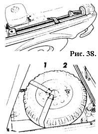
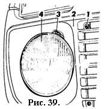
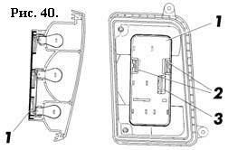
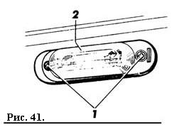
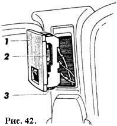
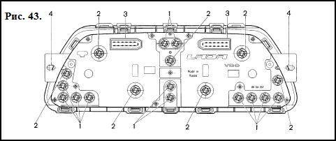

ТЕХНИЧЕСКОЕ ОБСЛУЖИВАНИЕ И ТЕКУЩИЙ РЕМОНТ АВТОМОБИЛЯ
Для замены колес:
 ЗАМЕНА КОЛЕС
– установите автомобиль на ровной площадке и затормозите его стояночным тормозом;
– достаньте домкрат, насос, сумку с инструментом и запасное колесо;
– ослабьте гайки крепления заменяемого колеса на один оборот комбинированным ключом 1 (рис. 37);
– вставьте рычаг домкрата 3 в кронштейн 2 и вращайте рукоятку 4 до тех пор, пока колесо не окажется приподнятым на несколько сантиметров над опорной поверхностью;
– отверните гайки и снимите колесо.
Установите запасное колесо и равномерно затяните гайки крепления;
– опустите автомобиль и снимите домкрат;
– подтяните гайки, проверьте и доведите до нормы давление воздуха в шине;
– уложите домкрат и запасное колесо, как показано на рисунке 38, и закрепите их эластичными ремнями 1. Кроме того, зафиксируйте положение запасного колеса винтом 2.
   ЗАМЕНА ЛАМП
Для замены лампы в фаре отверните винты 1 (рис. 39) крепления декоративной облицовки 2 радиатора и снимите ее, ослабьте винты 3 крепления обода оптического элемента, поверните обод против часовой стрелки и снимите его.
Выньте оптический элемент 4, снимите колодку, выведите из пазов усики пружинной защелки и извлеките лампу.
Чтобы заменить лампу в заднем фонаре, снимите с внутренней стороны багажного отделения пластмассовую заглушку, отсоедините колодку с гнезда 3 (рис. 40), сожмите фиксаторы 2 основания 1 и снимите ее в сборе с лампами.
Затем нажмите на лампу, поверните ее против часовой стрелки и выньте ее из гнезда.
Для замены ламп в фонаре освещения номерного знака, необ- ходимо с внутренней стороны накладки номерного знака надавить на крышку с надписью LADA 4x4 и аккуратно, преодолевая сопротивление пластмассовых защелок демонтировать ее.
Затем через отверстия в накладке номерного знака отверните винты 1 (рис. 41) крепления фонаря, выньте его из гнезда и снимите рассеиватель 2.
Чтобы заменить перегоревшую лампу 2 (рис. 42) в плафоне 1 освещения салона, аккуратно потяните его на себя.
Плафон удерживается в выемке центральной стойки двумя пружинами 3.
Для замены ламп в переднем фонаре поверните патрон со стороны моторного отсека против часовой стрелки и снимите его, нажмите на перегоревшую лампу, поверните против часовой стрелки и выньте ее из патрона.
Перегоревшую лампу в боковом указателе поворота заменяйте после снятия патрона с лампой со стороны моторного отсека.
 Для замены контрольных ламп 1 (рис. 43) и ламп 2 освещения в комбинации приборов снимите щиток и отверните винты крепления за проушины 4.
Затем потяните комбинацию приборов на себя и отсоедините пучки проводов от колодок 3. Лампу, подлежащую замене, поверните против часовой стрелки и выньте из гнезда.